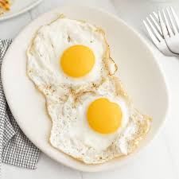

Fried Eggs
Click for recipe!

Ingredients:
- 1 tbsp. butter, or fat of your choice
- 1 large egg
- Kosher salt
- Freshly ground black pepper
-
In a small nonstick over medium heat, melt butter (or heat oil).
-
Crack egg into pan. Cook 3 minutes, or until white is set. Flip and cook 30 seconds until white is just set. Remove from pan and season with salt and pepper.